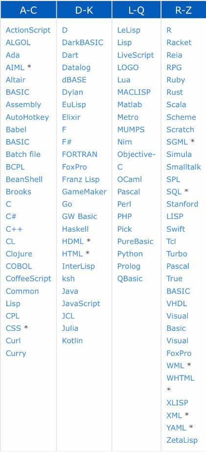

list of programming languages
links :
programming languages list :
There are dozens of programming languages used in the industry todaym and the most coomon one is :
- Python: Python is an advanced language of programming that is interpreted, object-oriented, and built on flexible and robust semantics, It is an open-source programming language, easy to integrate with web services, and it is User-friendly data structures
- Java: Java is a high-level, object-oriented, general purpose programming language with several features that make it ideal for web-based development, Java is known for its scalability and portability across various platforms, from mainframe to mobile data centers, Its strong features include good memory management, high performance, backward compatibility and top-notch security
- Ruby: Ruby is an open source, object-oriented scripting language that can be used independently or as part of the web framework Ruby on Rails, It easy to learn, straightforward and allows for swift creation of web applications, Ruby has an incredibly simple beautiful syntax that allows a developer to do more but with less code
- HTML: HTML is the basic markup language used to build web pages; it ensures that text and images (using tags) are correctly formatted so that Internet browsers can view them in the way they were meant to look.
- JavaScript: JavaScript is a programming language on the client side that runs inside a web application, executing commands on a computer rather than a server. It is normally put inside an HTML or ASP format. JavaScript is not related to Java, in spite of its name.
- C++: C++ is a general purpose, object-oriented, middle-level programming language and an extension of C language which lets code C++ in a "C style", Coding can be performed in either format in certain cases, making C++ an example of a hybrid language.
- C#: C# is a multi-paradigm programming language with strong disciplines for typing, imperative, declarative, functional, generic, object-oriented, and component-orientated, The language is best suited for the applications that are based on Windows, Android as well as iOS since it takes the aid of Microsoft Visual C++
- Swift : Swift is the newest open-source, multi-paradigm programming language used by Apple for iOS and OS X devices. Swift integrates the named parameters and object-oriented model of Objective-C, and includes an advanced compiler, debugger, and framework infrastructure, Swift requires less code, making it easier for existing JavaScript, Java , Python, C#, and C++
- PHP: PHP is an open source scripting language meant to develop dynamic web pages that work with databases in an effective manner. It is also used as a language for general purpose programming.
- SQL: SQL is a query language (not a development language) for the database that allows content to be added, accessed and managed in a database. It is the language that allows programmers inside a database to perform the common acronym CRUD (Create; Read; Update; Delete).
and there is a lot of other else languages that is used is programming
